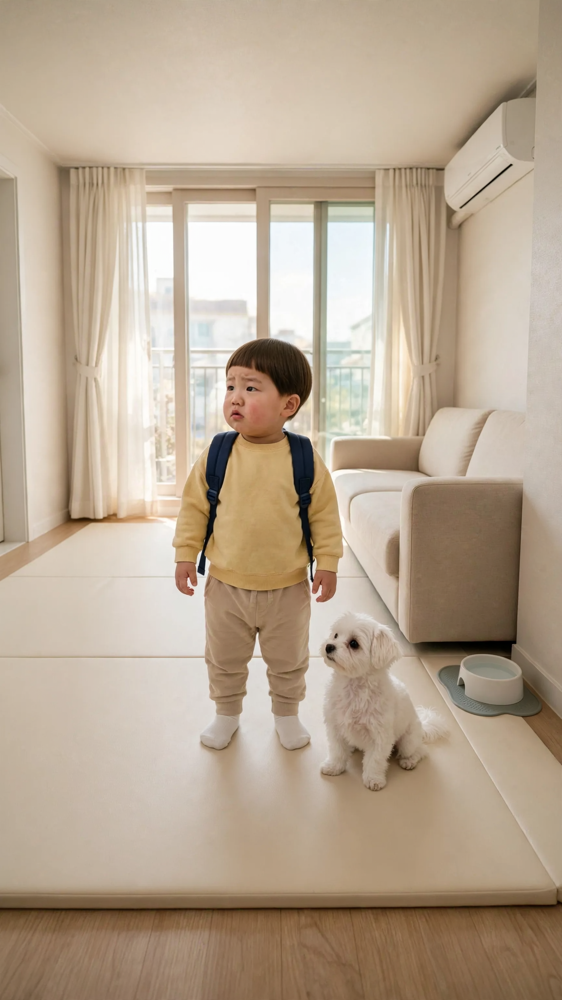
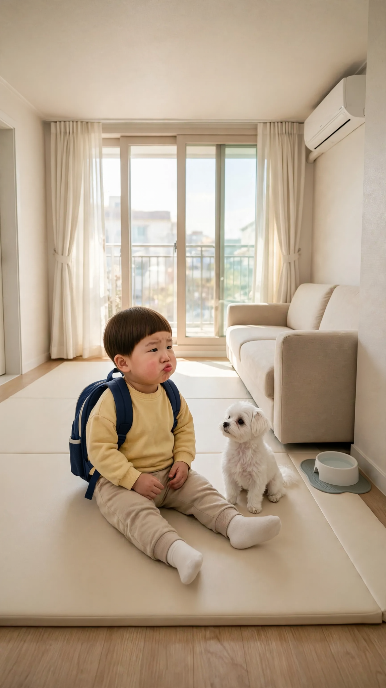
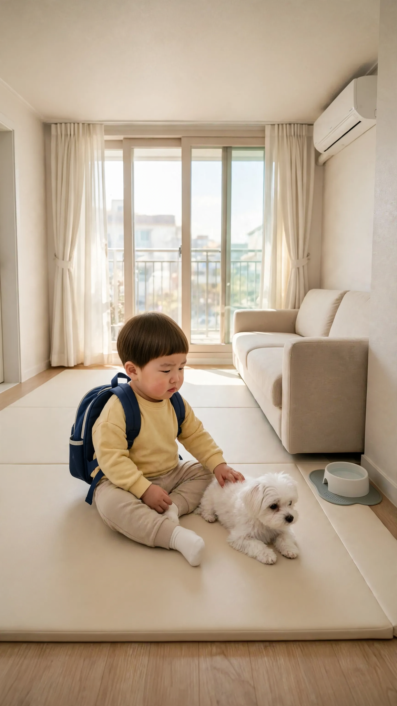
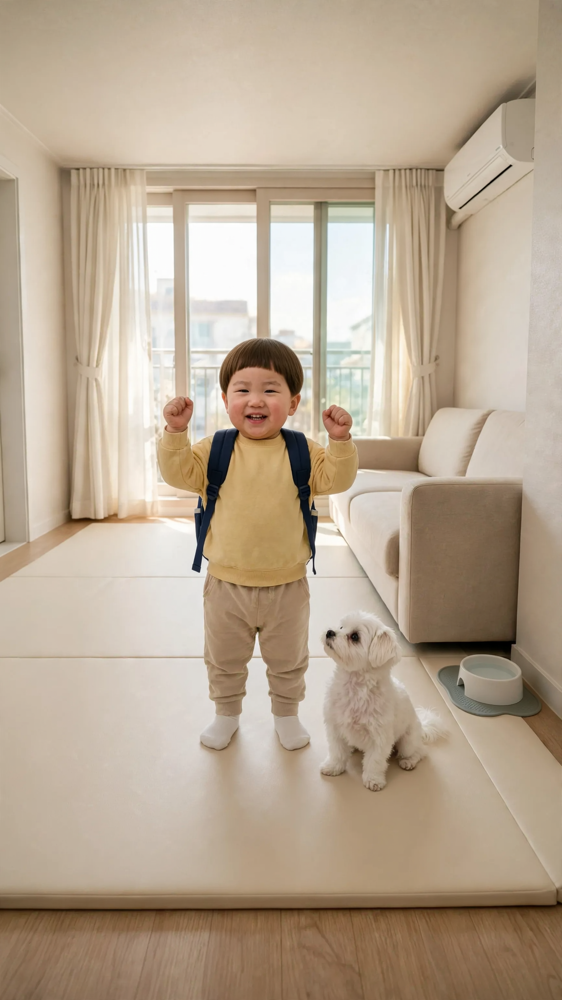

🎬 월요병을 선언하는 2세 직장인
4컷 · 24초 · 모든 컷 도윤이 혼자 말함 · 실패하면 같은 걸로 2~3번 다시 걸기
1번 컷
⏱ 6초도윤: 「어린이집 안 가다가 왜 오늘은 다시 가는 거야?」


[Character Action & Continuity] Realistic Korean slice-of-life short video clip. an ordinary modern South Korean apartment living room in Korea. Maintain exact appearance from start frame: a 24-month-old Korean toddler boy wearing a soft yellow crew-neck sweatshirt, beige pants, white socks and a small navy daycare backpack with its straps over his shoulders. Scale: a small 24-month-old toddler build with natural proportions. [0-4s] Doyoon tilts his head toward the left and asks his line right away, puzzled [4-6s] Doyoon blinks and tugs at a backpack strap [Dialogue Script & Emotion] 도윤 (단독 발화, 0초부터 바로): (진심으로 이해가 안 된다는 듯 고개를 갸웃하며) "어린이집 안 가다가 왜 오늘은 다시 가는 거야?" [Audio & Voice Specifications] Single Voice Track Only: Definite 18 to 24-month-old Korean INFANT TODDLER boy voice. Low-pitched, cute, raspy little boy toddler voice. Strictly NOT a school-age child, NOT female. Sound Format: Solo toddler voice in a quiet room. Background Sound: Quiet indoor room tone. Continuous steady indoor room air. [Technical Directives] 카메라: 가방 멘 도윤이가 보이는 거실 미디엄 샷. 카메라 고정. 화면: 도윤이와 방만 보인다. 벽과 가구 표면은 무늬 없이 비어 있다. 도윤이 입모양 100% 완벽 립싱크.
2번 컷
⏱ 6초도윤: 「오늘은 도윤이 어린이집 안 갈래.」


[Character Action & Continuity] Realistic Korean slice-of-life short video clip. an ordinary modern South Korean apartment living room in Korea. Maintain exact appearance from start frame: a 24-month-old Korean toddler boy wearing a soft yellow crew-neck sweatshirt, beige pants, white socks and a small navy daycare backpack with its straps over his shoulders. Scale: a small 24-month-old toddler build with natural proportions. [0-4s] Doyoon plops down on the mat and says his line right away with a pout [4-6s] Doyoon folds his arms and nods firmly [Dialogue Script & Emotion] 도윤 (단독 발화, 0초부터 바로): (입을 삐죽 내밀고 단호하게) "오늘은 도유니 어린이집 안 갈래." [Audio & Voice Specifications] Single Voice Track Only: Definite 18 to 24-month-old Korean INFANT TODDLER boy voice. Low-pitched, cute, raspy little boy toddler voice. Strictly NOT a school-age child, NOT female. Sound Format: Solo toddler voice in a quiet room. Background Sound: Quiet indoor room tone. Continuous steady indoor room air. [Technical Directives] 카메라: 매트에 앉은 도윤이 얼굴이 보이는 미디엄 샷. 카메라 고정. 화면: 도윤이와 방만 보인다. 벽과 가구 표면은 무늬 없이 비어 있다. 도윤이 입모양 100% 완벽 립싱크.
3번 컷
⏱ 6초도윤: 「콩이가 심심하고 아프대. 돌봐 줘야 해.」


[Character Action & Continuity] Realistic Korean slice-of-life short video clip. an ordinary modern South Korean apartment living room in Korea. Maintain exact appearance from start frame: a 24-month-old Korean toddler boy wearing a soft yellow crew-neck sweatshirt, beige pants, white socks and a small navy daycare backpack with its straps over his shoulders. Scale: a small 24-month-old toddler build with natural proportions. [0-4s] Doyoon strokes Kongi's fur and says his line right away, very serious [4-6s] Doyoon looks up at the left side of the room with a hopeful face [Dialogue Script & Emotion] 도윤 (단독 발화, 0초부터 바로): (아주 진지하게, 핑계인 줄 모르는 척) "콩이가 심심하고 아프대. 돌봐 줘야 해." [Audio & Voice Specifications] Single Voice Track Only: Definite 18 to 24-month-old Korean INFANT TODDLER boy voice. Low-pitched, cute, raspy little boy toddler voice. Strictly NOT a school-age child, NOT female. Sound Format: Solo toddler voice in a quiet room. Background Sound: Quiet indoor room tone. Continuous steady indoor room air. [Technical Directives] 카메라: 콩이를 쓰다듬는 도윤이 얼굴이 보이는 미디엄 샷. 카메라 고정. 화면: 도윤이와 방만 보인다. 벽과 가구 표면은 무늬 없이 비어 있다. 도윤이 입모양 100% 완벽 립싱크.
4번 컷
⏱ 6초도윤: 「월요일 아침 힘내세요!」


[Character Action & Continuity] Realistic Korean slice-of-life short video clip. an ordinary modern South Korean apartment living room in Korea. Maintain exact appearance from start frame: a 24-month-old Korean toddler boy wearing a soft yellow crew-neck sweatshirt, beige pants, white socks and a small navy daycare backpack with its straps over his shoulders. Scale: a small 24-month-old toddler build with natural proportions. [0-4s] Doyoon looks straight at the camera, raises both fists and says his line right away, cheering [4-6s] Doyoon grins widely and waves both hands at the camera [Dialogue Script & Emotion] 도윤 (단독 발화, 0초부터 바로): (환한 얼굴로 씩씩하게 응원하듯) "월요일 아침 힘내세요!" [Audio & Voice Specifications] Single Voice Track Only: Definite 18 to 24-month-old Korean INFANT TODDLER boy voice. Low-pitched, cute, raspy little boy toddler voice. Strictly NOT a school-age child, NOT female. Sound Format: Solo toddler voice in a quiet room. Background Sound: Quiet indoor room tone. Continuous steady indoor room air. [Technical Directives] 카메라: 카메라를 보는 도윤이 정면 미디엄 샷. 카메라 고정. 화면: 도윤이와 방만 보인다. 벽과 가구 표면은 무늬 없이 비어 있다. 도윤이 입모양 100% 완벽 립싱크.